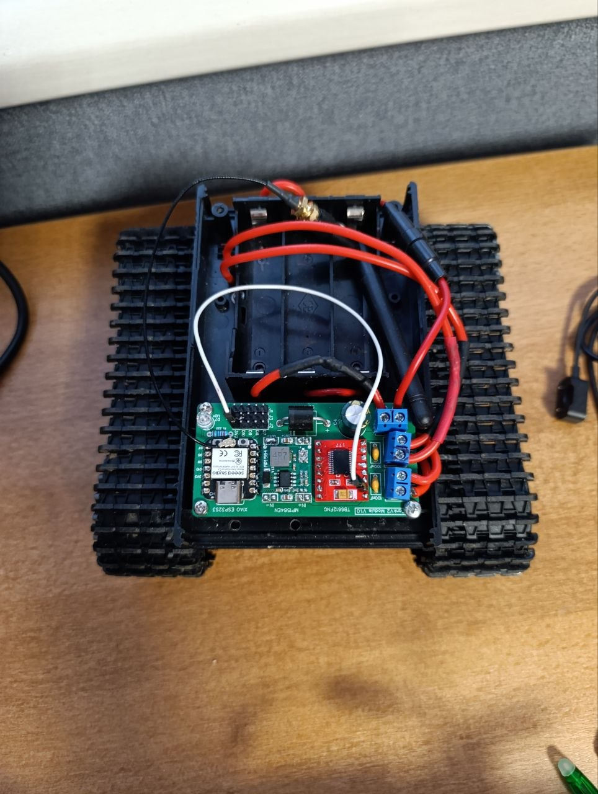
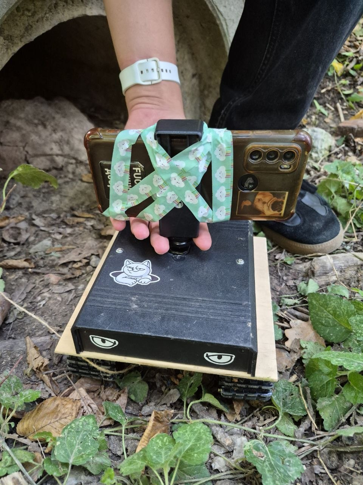
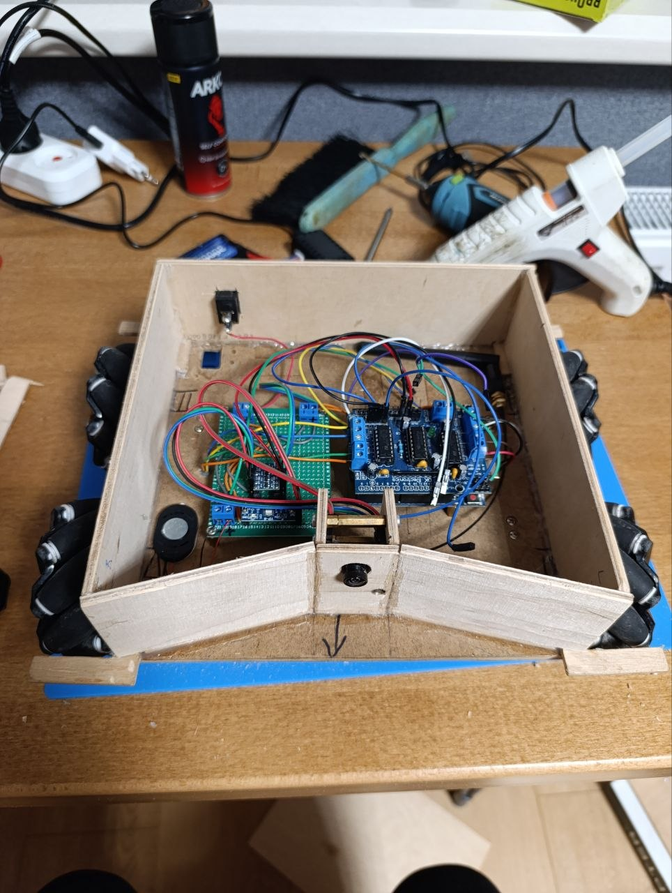
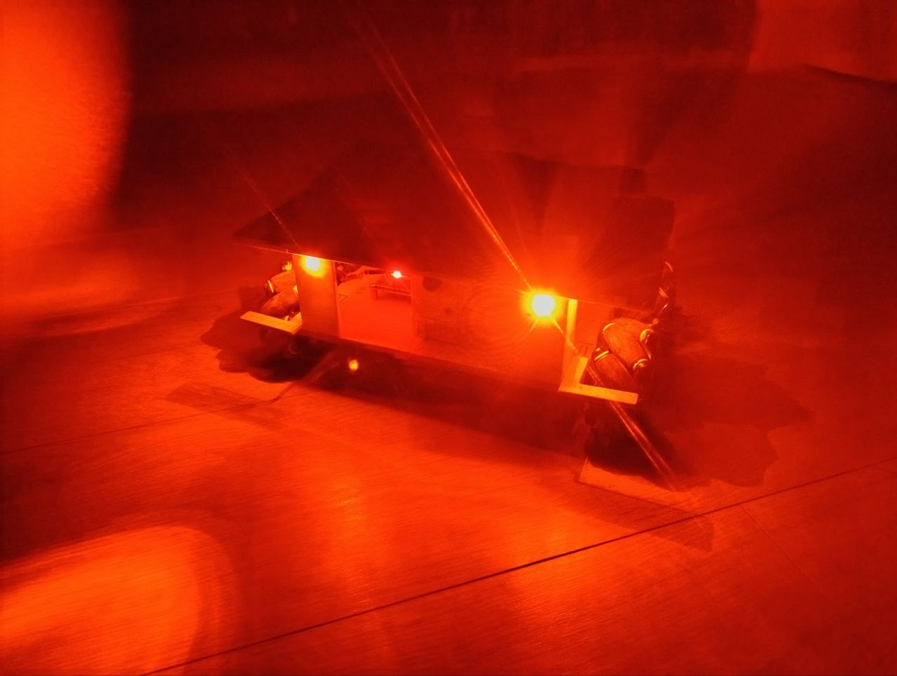

Голуб Максим
Unity Developer / Full-Stack / Hardware & IoT інженер
Розробник з інтересом до створення ігор та роботи із мікроконтролерами. Вмію робити веб-сайти, 2D ігри та невеличкі IoT пристрої.
E-mail: maksym.holub.kb.2025@lpnu.ua
GitHub: erorr-404
Технічні навички
- Мови програмування: C#, C/C++, Python, JavaScript, Rust
- Рушії та фреймворки: Unity, Flask, FastAPI, Django, Arduino
- Мікроконтролери та мікрокомп'ютери: ESP32, Raspberry Pi, Arduino
- Досвід роботи з Linux
Проєкти
- Емулятор файлової системи CLI в оперативній пам’яті, написаний на мові Rust
-
Наземний гусеничний дрон «TankV2»


-
Наземний дрон з камерою «Crab-2»


- Телеграм-бот для віддаленого друку
- Телеграм-бот, який використовує Ollama для спілкування з користувачами у Telegram.
- Веб-сайт для перегляду розкладу уроків (Репозиторій)
- Сайт ради президента ліцею №4 м. Вінниця (Репозиторій)
Освіта
- Курс «Linux & Network Administration» від компанії PortaOne
- Спеціальність «Кібербезпека та захист інформації» на кафедрі ІКТА, НУЛП (в процесі навчання)
- Середня освіта з відзнакою у закладі «Вінницький Ліцей №4»